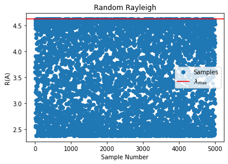

Week 5 Day 5 Lab#
import numpy as np
import matplotlib.pyplot as plt
---------------------------------------------------------------------------
ModuleNotFoundError Traceback (most recent call last)
Cell In[1], line 2
1 import numpy as np
----> 2 import matplotlib.pyplot as plt
ModuleNotFoundError: No module named 'matplotlib'
Recall: Eigenvalues#
An eigenvector is a vector \(v\) such that
where
\(A\) is a matrix
\(\lambda\) is a scalar (called the eigenvalue)
Suppose\( A= \begin{bmatrix} 4 & 1\\ 1 & 3 \end{bmatrix}\) Note that \(A=A^T\). We call these matrices symmetric. We can compute the eigenvalues and eigenvectors as follows:
A = np.array([[4,1],[1,3]])
A @ np.linalg.eig(A)[1][:,1]
array([-1.25227364, 2.02622131])
np.linalg.eig(A)[0][1]*np.array([-0.52573111, 0.85065081])
array([-1.25227364, 2.02622132])
Recall: Quadratic Forms#
Consider
This is called a quadratic form. If
x = [x₁,x₂]
then
A =
[[4,1],
[1,3]]
gives $\(f(x)=4x_1^2+2x_1x_2+3x_2^2.\)$
Quadratic forms appear throughout optimization. Most importantly, in eigenvalues.
The Rayleigh Quotient#
The quantity
is called the Rayleigh Quotient.
One of the most important theorems in linear algebra states
And that for symmetric matrices \(\min_{x\neq 0}R(A)=\lambda_{\min}\) and \(\max_{x\neq 0}R(A)=\lambda_{\max}\) where the \(x\)’s that acheive these values are the eigenvectors.
Consider drawing these randomly:
values, vectors = np.linalg.eig(A)
largest = np.max(values)
samples = []
for i in range(5000):
x = np.random.randn(2)
x = x/np.linalg.norm(x)
value = x.T @ A @ x
samples.append(value)
print(max(samples))
print(largest)
4.618033785164424
4.618033988749895
plt.scatter([i for i in range(len(samples))],samples,label='Samples')
plt.axhline(largest, color='red',label=r'$\lambda_{\max}$')
plt.xlabel('Sample Number')
plt.ylabel('R(A)')
plt.title('Random Rayleigh')
plt.legend()
<matplotlib.legend.Legend at 0x2069e8c9a48>

Problem 1#
Write a function that uses scipy.optimize to find the largest and smallest eigenvalue of a symmetric two by two matrix.
Problem 2#
Write a function that randomly samples vectors to approximate the largest and smallest eigenvalues. Make this function print the error as well.
Problem 3#
Generalize the function from Problem 1 for arbitrary sized matrices.